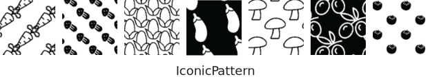

Description
Textures can be used to represent categories of data in charts or maps. There are different types of textures we want to explore:
Geometric textures are textures made up of points and lines. They have been used for centuries in print. Here are some examples:
Iconic textures resemble the data they stand for. Here are some examples of textures for vegetables:

In this experiment, you will design a , once with geometric textures and once with iconic textures. We would like to ask you to parameterize the textures appropriately for an effective visualization with our texture design tool.
Before the experiment, let's first go through a tutorial to get familiar with the interface and interaction of the texture design tool.